• Le bazar
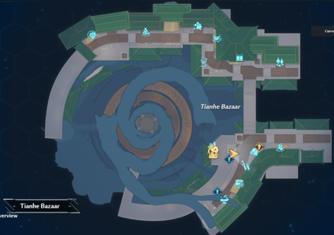
Les dominiums sont la monnaie speciale a Joltville, la majorite des marchandises sont achetees avec cette monnaie
Tout ce que l'on va voir par la suite se passe ici: au Thianhe Bazar.
On peut voir une multitude d'icones a l'ecran, regardons dans l'ordre:
• Le centre d'adoption des betes
C'est ici que vous pourrez revendre les betes que vous avez reussi a apprivoiser et elever au maximum.
• Le restaurant "Rosee de Jade"
Vous pourrez y acheter les resources suivantes:
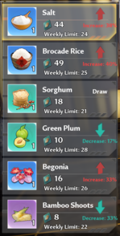
Le sel ainsi que le riz ne sont pas obtenables dans la nature. Il vous faut donc en acheter quand les prix sont bas.
Les autres ressources sont ramassables dans la nature, donc pas besoin de les acheter.
• Le pavillion de l'elexir dore"
Vous pourrez y acheter les resources suivantes:
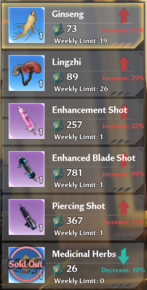
Les herbes medicinales ne sont pas obtenables dansla nature. Il vous faut donc en acheter quand les prix sont bas.
Les autres ressources (Le gimgembre et les Lingzhi) sont ramassables dans la nature, donc pas besoin de les acheter.
Les piqueres sont des buffs qui durent pour 1 semaine. Achetez donc celles qui vous conviennent quand les prix
le permettent
• Le piercing shot augmente le shatter de 25% et l'aggro de 15%.
• L'enhanced blade shot (version amelioree du blade shot) augemnte l'attaque de 3.5%.
• L'enhanced shot (version amelioree du shot) augmente les statisques des armes comme si les etoiles des armes et
matrices sont maximum. (ATTENTION : Ca n'augmente pas le nombre d'etoiles, faut pas abuser)
• Le Gourmet Loft
Il vend que de la nourriture, tout est optionel.
• Le hall Ruili
On y trouve uniquement des elements de cosmétiques et quelques cadeaux pour les simulacres. Achetez donc ce qu'il
vous plaira: tout est optionel.
• La pharmacie He an
On y trouve principalement de la nourriture, donc c'est optionel. Il y a aussi:
Le blade shot qui augmente l'attaque de 2.5% pendant 7 jours.
• Le centre d'echange Lusterium
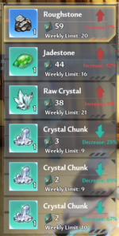
Les ressources sont ramassables dans la nature, donc pas besoin de les acheter.
• Maison Brocade
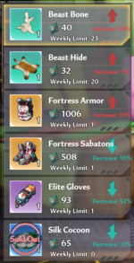
Seul le cocon de soie est un item disponible uniquement ici, le reste est farmable.
• L'atelier celeste
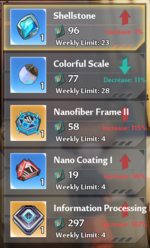
Tout y est optionel et est farmbale dans la nature
• Le trio d'amelioration
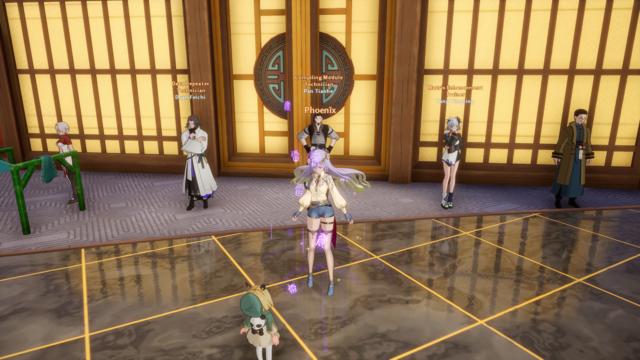
Ils permettent d'augmenter votre stuff contre des dominiums (dans une certaine limite hebdomadaire):
• Les matrices
• Les equipements titans
• Les stats aleatoires des equipements
• Voici un exemple avec les matrices
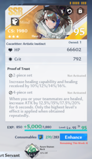
• Le preteur sur gage
Tout comme pour le centre d'adoption des betes, c'est ici que vous pourrez revendre vos objets
• Le panneau des requetes
Ici vous pourrez y accepter des demandes et une fois realisees, les livrer aux marchands
• La maison de géomancie
Ici, tout y est optionel, sauf le morceau de barbe de dragon de jade qui est un item de quete:
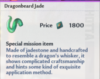
• Les requetes
Les requetes vous permettent d'echanger des objets relativements communs (farmables ou achetables) contre des objets
uniquement obtenables ici
Voici un exemple de table de requetes (une fois celles-ci acceptees):
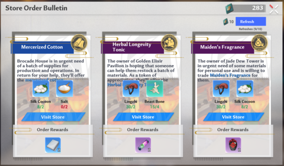
On peut donc voir dans l'ordre que je dois livrer:
• de la soie et du sel a la maison brocade
• des lingzhi et des os de betes au pavillion de l'elexir dore
• des lingzhi et de la soie a la pharmacie he an
On peut savoir ou on doit livrer avec l'icone en haut a droite de chacune des requetes.
• Achat a bas prix
Comme vous avez pu le remarquer jusque la, tous les prix ne sont pas fixes chez les marchands. Ils fluctuent tout au long
de la semaine:
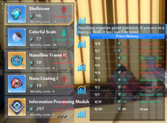
Ici, chez le forgeron (atelier celeste), on peut voir que la pierre coquille, vendue 96 dominium est plus chere de 1%
compare a son prix de la veille
Hier c'etait 16% de plus que l'avant veille, pour 95 dominiums. L'idee est donc d'acheter les objets non farmables aux
jours ou ca coute moins cher.
• Le preteur sur gage et le centre d'adoption des betes
C'est ici que tout ce joue!
Plus tot, j'ai ecris: "C'est ici que vous pourrez revendre les betes que vous avez resussi a apprivoiser et elever
au maximum", en parlant du centre d'adoption des animaux...
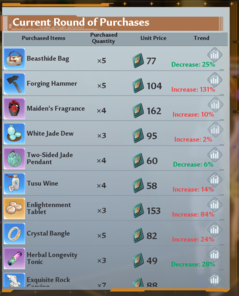
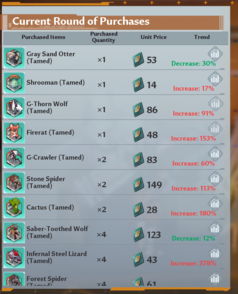
Et bien c'est tres simple, le centre d'adoption des animaux et le preteur sur gage sont les seuls commercent qui
achetent des trucs.
Et donc au dessus, on peut voir la table de:
• leurs requetes de la semaine
• les quantites demandees
• le prix du jour (et la flucturation de prix par rapport a la vielle) + l'icone pour voir tous les prix precedents
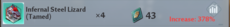
Concentrons nous par exemple sur le lezard:
Ils en veulent 4 cette semaine, et aujourd'hui semble etre un bon moment puisque le prix est de +378% par rapport a la veille
MAIS, c'est par rapport a la veille, pas par rapport au prix de base.
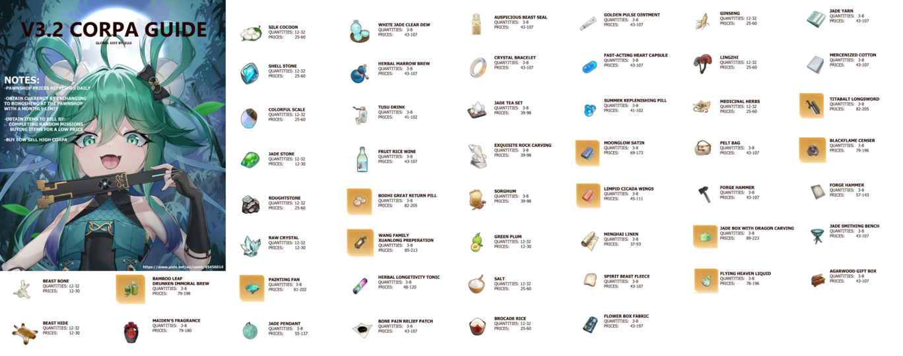
Cet ici que ce magnifique guide (qui ne vient absolument pas de moi) nous montre les vrais prix min et max
des objets. Donc referrez vous a ceci si vous souhaitez faire les meilleurs achats et les meilleures ventes.
• Resume
Et voila, c'est tout ce qu'il y a faire:
• Acheter ce qui n'est pas farmable a bas prix
• Remplir les requetes et elever des betes
• Les revendre a haut prix
• Pourquoi
A priori, pour avoir:
• 1800 dominiums pour acheter l'objet de quete
• acheter les trucs cosmetiques
• acheter de la drogue toutes les semaines